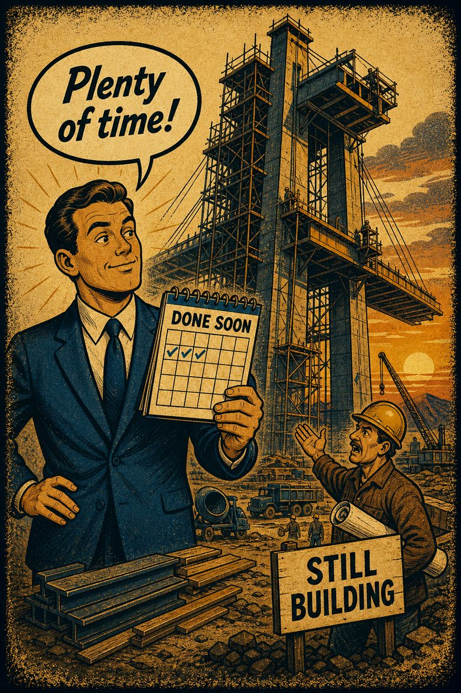
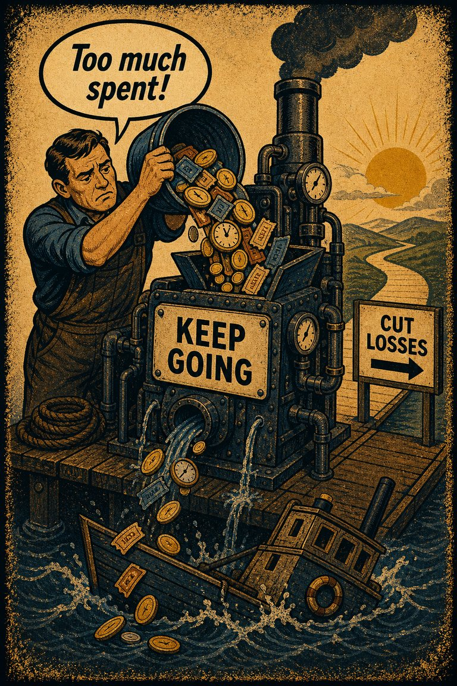

Common in live judgment
88
Strong in saving, health, study habits, and routine self-control problems.
Rare
Frequent

Cognitive Biases
A practical cognitive-bias site with clear definitions, learning paths, assessments, self-audits, and debiasing tools.
Cognitive Bias
The tendency to give disproportionate weight to immediate costs and payoffs relative to later ones, even when the later consequences are larger.
What it distorts
It bends planning, self-control, savings, health behavior, and project discipline by making now dominate later beyond what the long-term case justifies.
Typical trigger
Habit change, budgeting, deadlines, dieting, investing, procrastination, and any tradeoff between immediate friction and delayed value.
First countermove
Ask what the future version of you would want the current version not to discount so heavily.
Coverage depth
Structured process
What immediate discomfort or reward is getting too much say over the longer comparison?
Near-term experience feels more concrete, more urgent, and more behaviorally real than distant consequences. The timing difference itself starts to masquerade as a difference in importance.
These are classroom-facing editorial estimates for comparing how the bias behaves in use. They are teaching aids, not measured statistics.
Common in live judgment
88
Strong in saving, health, study habits, and routine self-control problems.
Easy to spot from outside
57
Often visible once the time horizon is explicitly redrawn.
Easy to innocently commit
92
Immediate experience feels unusually diagnostic of what matters.
Teaching difficulty
29
Concrete trade-off examples make the pattern easy to grasp.
This comparison makes the hidden pull easier to see before the technical label has to do all the work.
Biased move
This is like letting the first cold step into the pool decide your entire opinion of the swim.
Clearer comparison
The first sensation is real, but it is not the whole timeline. Good choice compares now-plus-later, not just the felt bite of the present moment.
Do not use this label whenever short-term needs matter. Sometimes the present really should dominate. The distortion appears when near-term costs or rewards get extra weight simply because they are near.
Use this label when a smaller sooner payoff or relief wins over a better longer-run option mainly because immediacy is doing too much of the persuasive work.
Use the quick check, caveat, and nearby confusions together. The fastest diagnosis is often the noisiest one.
Each example changes the surface context while keeping the same hidden distortion in place.
A person trades away long-run value repeatedly because the short-term inconvenience feels more real than the later cost.
A team underinvests in documentation, maintenance, or prevention because the immediate time cost is vivid and the later savings are not.
Institutions defer costly preparation even when future damage will be larger, because the present burden is the part people feel directly.
The immediate discomfort seems unusually diagnostic of what matters, while the future consequence feels vague enough to bargain away.
Teaching note: This page gives the site stronger traction on habit formation, procrastination, and the recurring gap between what people endorse and what they actually choose.
The strongest debiasing moves change the process, not just the label.
Make the future consequence concrete enough to compete with the present feeling by writing the delayed cost in specific terms.
Assign one voice in planning discussions to represent the future user, customer, or team burden explicitly.
Use commitment devices, scheduled reviews, and default structures that protect long-term interests from momentary preference drift.
Practice And Repair
Present bias narrows the comparison window. The immediate cost or reward swells in felt importance while the later consequences stay abstract enough to bargain away.
A decision trades immediate payoff or discomfort against a larger later gain or loss.
The present moment feels more real, more vivid, and more urgent than the later part of the timeline.
Temporal distance rather than true value begins steering the decision.
Rewrite the trade-off as a full timeline and compare the options from the standpoint of the future self who will live with the later consequences.
How much of my preference here disappears once the immediate moment is no longer allowed to dominate the whole timeline?
Spot It
Slow It
Reframe It
These are nearby labels that can share the same outer appearance while differing in what actually drives the distortion. Use the overlap, the distinction, and the diagnostic question together before settling the call.
Why compare it: Projection bias assumes future preferences will resemble current ones; present bias simply overweights the immediate moment in the tradeoff.
Why compare it: Planning fallacy underestimates time, cost, or complexity; present bias overweights the appeal of immediate relief or payoff while choosing.
Why compare it: Sunk-cost effect protects past investment; present bias privileges the present payoff or pain point over future consequences.
These are useful when the label seems roughly right but the process change still feels underspecified.
What is my future self likely to wish I had weighted more seriously today?
Which immediate discomfort is crowding out a larger downstream cost?
Would I endorse this tradeoff if the long-term consequence arrived tomorrow instead of later?
These sourced cases do not prove what was in someone's head with perfect certainty. They are teaching cases for showing where the bias pressure becomes visible in practice.
Smaller-sooner versus larger-later choice studies
People often reverse preferences in favor of smaller sooner rewards once the immediate option moves close enough to the present, even when they previously preferred the larger later reward.
Why it fits: The temporal closeness itself changes the weighting rather than the underlying values alone.
Wikipedia · Modern behavioral economics
Retirement saving keeps losing to immediate consumption
People who sincerely endorse long-term goals can still repeatedly underfund or postpone them when a smaller immediate reward or relief is on the table right now.
Why it fits: Temporal nearness is changing the weights, not just revealing stable preferences.
Wikipedia · Modern behavioral economics
Use these sources to move from the teaching page into the underlying literature and seed reference material. The site is still written for clarity first, but the stronger pages should also be traceable.
A useful economic model for immediate-cost and delayed-benefit distortions in planning and self-control.
Seed taxonomy and broad coverage are drawn from Wikipedia's List of cognitive biases, then editorially reshaped into a teaching-first reference.
Once you know the bias, these nearby tools help you use the page in a real workflow rather than as a static definition.
Curated sequences where this bias commonly appears alongside a few predictable neighbors.
Short audits you can run before the distortion hardens into a decision, a verdict, or a post-hoc story.
Bias-aware AI prompts that widen the frame instead of simply endorsing the first preferred conclusion.
A mixed scenario set that can quietly pull this bias into the question bank without announcing the answer in the title first.
These neighbors were selected from shared categories, shared patterns, and explicit editorial links where available.
The tendency to overestimate how much your future preferences, values, and reactions will resemble whatever you feel strongly right now.

The tendency for people to underestimate the time it will take them to complete a given task

The tendency to keep investing in a losing path because of what has already been spent, even when the forward-looking case has weakened.
The tendency to push back against a perceived attempt to limit one's freedom of choice, sometimes by moving toward the very option one was being steered away from.
The tendency for someone to act when faced with a problem even when inaction would be more effective, or to act when no evident problem exists
The tendency to solve problems through addition, even when subtraction is a better approach